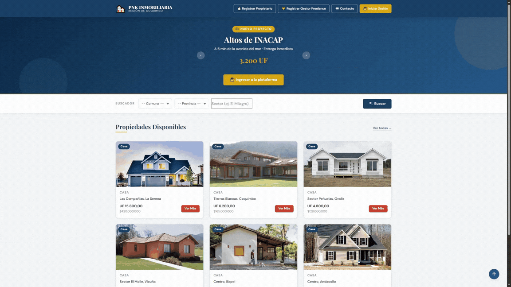
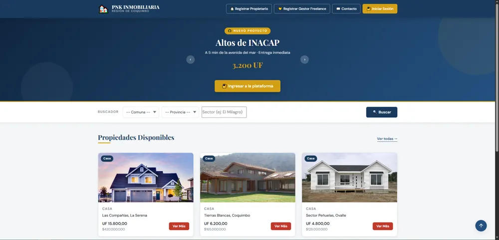
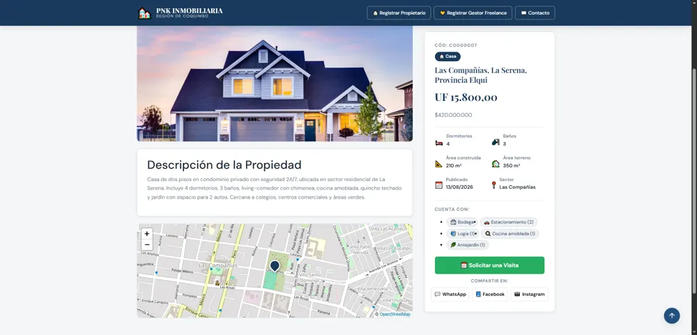
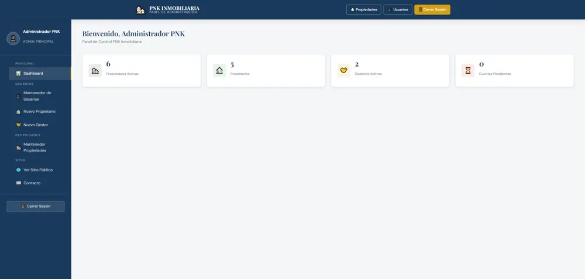
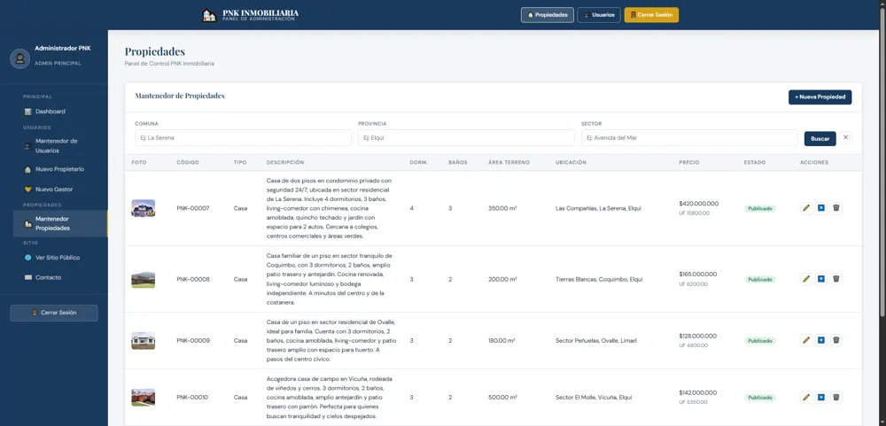

PNK Inmobiliaria
- Arquitectura híbrida: sitio público en PHP y panel administrativo como SPA en React 19, sobre el mismo backend.
- Contraseñas con bcrypt y consultas preparadas en todas las sentencias SQL.
- Tres perfiles (administrador, propietario, gestor) con aprobación de cuentas.
- Mapas con Leaflet y geocodificación con Nominatim.
PHPMySQLReact 19ViteBootstrap 5AWS EC2Apache
Ver códigoEstuvo desplegado en AWS; ya no está en línea.